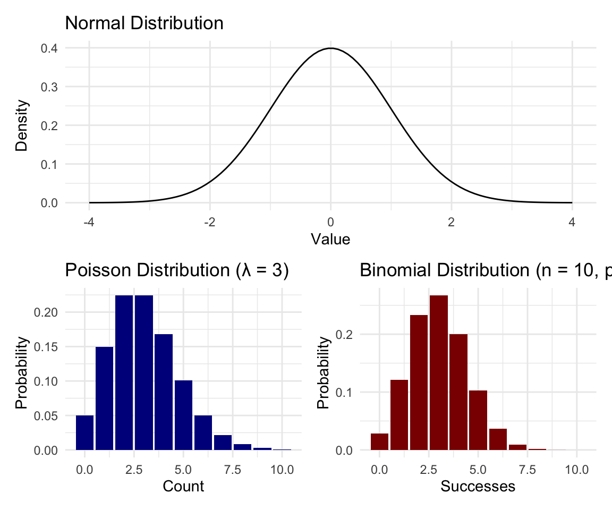
Lecture 14 - Generalized Linear Models
Lecture 13: Review of ANOVAs
Review
- ANOVA
- Factorial ANOVA
- Nested ANOVA
- ASSUMPTIONS OF ALL
Homogeneity of variance - Levenes or Bartletts Test
Normality of Residuals
Independence
Lecture 14: GLM Overview
Overview
- General Linear Models GLM
- Essentially the same as before while using defined distributions
- Normal
- Lognormal
- Binomial
- Poisson
- Gamma
- Negative binomial
- Logistic Regression
- when the outcome is yes or no or categorical
Overview of Generalized Linear Models (GLMs)
General linear models assume normal distribution of response variables and residuals. However, many types of biological data don’t meet this assumption.
Generalized Linear Models (GLMs) allow for a wider range of probability distributions for the response variable.
GLMs allow all types of “exponential family” distributions:
- Normal
- Lognormal
- Binomial
- Poisson
- Gamma
- Negative binomial
GLMs can be used for binary (yes/no), discrete (count), and categorical/multinomial response variables, using maximum likelihood (ML) rather than ordinary least squares (OLS) for estimation.
Note: GLMs extend linear models to non-normal data distributions.
Example comparison of logged response variable and GLM
# Simulate data that students might log-transform
set.seed(123)
treatment_data <- data.frame(
treatment = rep(c("Control", "Low", "High"), each = 20),
biomass = c(rlnorm(20, meanlog = 2, sdlog = 0.5),
rlnorm(20, meanlog = 2.5, sdlog = 0.5),
rlnorm(20, meanlog = 3, sdlog = 0.5)))
# Approach 1: Log transformation + ANOVA
model_log <- lm(log(biomass) ~ treatment, data = treatment_data)
# Approach 2: Gamma GLM with log link
model_glm <- glm(biomass ~ treatment,
family = Gamma(link = "log"),
data = treatment_data)Here is the difference
# Compare predictions on original scale
cat("logged response variable\n\n")
## logged response variable
emmeans(model_log, ~treatment, type = "response") # Geometric means
## treatment response SE df lower.CL upper.CL
## Control 7.93 0.818 57 6.45 9.75
## High 21.18 2.180 57 17.23 26.04
## Low 11.87 1.220 57 9.66 14.60
##
## Confidence level used: 0.95
## Intervals are back-transformed from the log scale
cat("\n\n")
cat("using glm opn original scale\n\n")
## using glm opn original scale
emmeans(model_glm, ~treatment, type = "response") # Arithmetic means
## treatment response SE df lower.CL upper.CL
## Control 8.86 0.939 57 7.16 11.0
## High 23.73 2.520 57 19.19 29.3
## Low 12.84 1.360 57 10.39 15.9
##
## Confidence level used: 0.95
## Intervals are back-transformed from the log scaleThe Three Elements of a GLM
GLMs consist of three components:
- Response component: The response variable and its probability distribution (from exponential family: normal, binomial, Poisson)
- Systematic component: The predictor variable(s) in the model, which can be continuous or categorical
- Link function: Connects expected value of Y to predictor variables
\[g(\mu) = \beta_0 + \beta_1X_1 + \beta_2X_2...\]
ImportantLink Functions and Distributions
| Distribution | Common Link Function | Formula |
|---|---|---|
| Normal | Identity | \(g(\mu) = \mu\) |
| Poisson | Log | \(g(\mu) = \log(\mu)\) |
| Binomial | Logit | \(g(\mu) = \log[\mu/(1-\mu)]\) |
GLM with Gaussian (Normal) Distribution: Setup
The simplest form of GLM uses a normal (Gaussian) distribution with an identity link function. This is equivalent to standard ANOVA
Let’s compare a standard linear model and a Gaussian GLM
Island Biogeography Data
The
galadataset from thefarawaypackage contains data on 30 Galapagos islands, testing MacArthur-Wilson’s theory of island biogeography.Variables in the dataset:
Species- Number of plant species (count data)Endemics- Number of endemic species (count data)Area- Island area (km²)Elevation- Maximum elevation (m)
## Species Endemics Area Elevation Nearest size_category ## Baltra 58 23 25.09 346 0.6 Medium ## Bartolome 31 21 1.24 109 0.6 Medium ## Caldwell 3 3 0.21 114 2.8 Small
Let’s look at the summary of our Gaussian GLM:
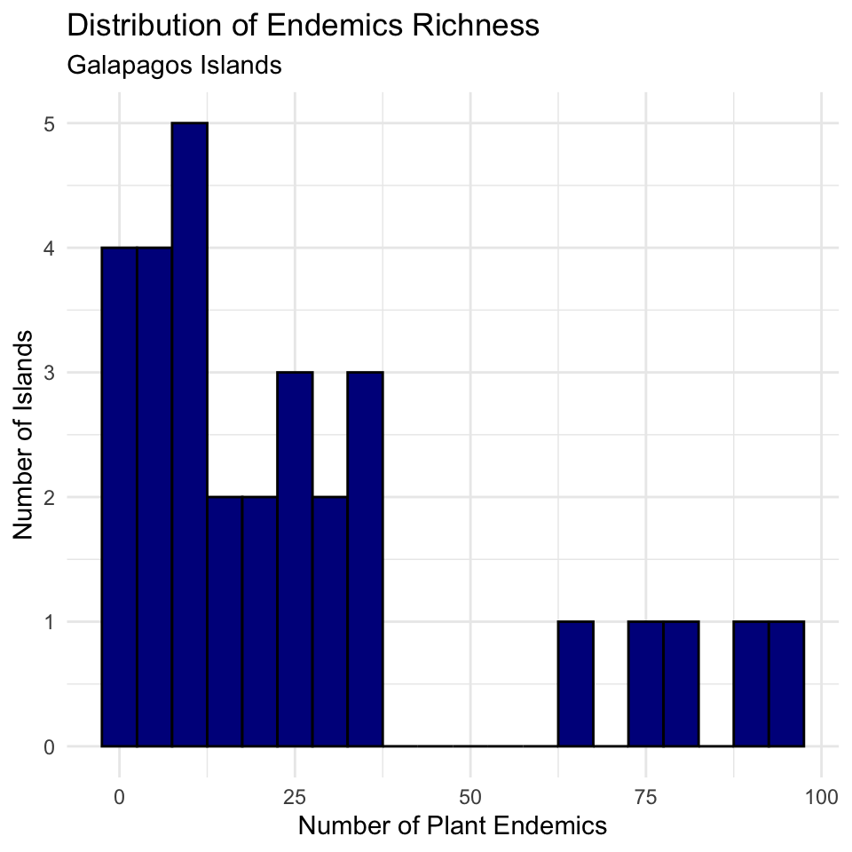
GLM with Gaussian (Normal) Distribution: Setup
The simplest form of GLM uses a normal (Gaussian) distribution with an identity link function. This is equivalent to standard linear regression.
Let’s compare a standard linear model and a Gaussian GLM using the Galapagos dataset, modeling endemic Endemics richness by island size category.
| Endemics | Area | size_category | Elevation |
|---|---|---|---|
| 89 | 4669.32 | Large | 1707 |
| 95 | 903.82 | Large | 864 |
| 35 | 634.49 | Large | 1494 |
| 81 | 572.33 | Large | 906 |
| 65 | 551.62 | Large | 716 |
| 73 | 170.92 | Large | 640 |
| 23 | 129.49 | Large | 343 |
| 37 | 59.56 | Medium | 777 |
Let’s visualize endemic Endemics by island size:
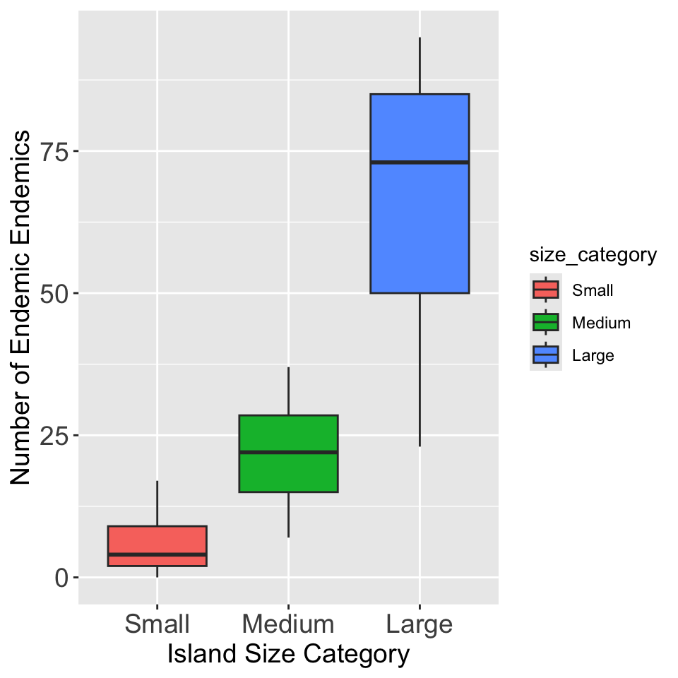
GLM with Gaussian (Normal) Distribution: Setup
The simplest form of GLM uses a normal (Gaussian) distribution with an identity link function. This is equivalent to standard linear regression.
- Let’s compare a standard linear model and a Gaussian GLM using the Galapagos dataset, modeling endemic species richness by island size category.
- Fit a standard linear model - model_lm <- lm(Endemics ~ size_category,
data = gala) - Fit a Gaussian GLM
- model_gaussian <- glm(Endemics ~ size_category, data = gala,
family = gaussian(link = “identity”)) Residual Standard Error. This is the standard deviation of the residuals (\(\sigma\))
- Fit a standard linear model - model_lm <- lm(Endemics ~ size_category,
- Let’s look at the summary of our Gaussian GLM:
##
## Call:
## lm(formula = Endemics ~ size_category, data = gala)
##
## Residuals:
## Min 1Q Median 3Q Max
## -42.857 -4.386 -0.762 6.940 29.143
##
## Coefficients:
## Estimate Std. Error t value Pr(>|t|)
## (Intercept) 5.636 4.402 1.28 0.2113
## size_categoryMedium 16.030 6.095 2.63 0.0139 *
## size_categoryLarge 60.221 7.059 8.53 3.82e-09 ***
## ---
## Signif. codes: 0 '***' 0.001 '**' 0.01 '*' 0.05 '.' 0.1 ' ' 1
##
## Residual standard error: 14.6 on 27 degrees of freedom
## Multiple R-squared: 0.7343, Adjusted R-squared: 0.7146
## F-statistic: 37.31 on 2 and 27 DF, p-value: 1.697e-08GLM with Gaussian (Normal) Distribution: Setup
- Let’s look at the summary of our Gaussian GLM:
- Dispersion parameter
- variance of the residuals (\(\sigma^2\))
- Null deviance
This is the error (deviance) of the “Null” or “Intercept-Only” model
how much error you have when you try to predict the number of endemics using only the overall average, without any predictors. It’s your baseline, or the total amount of variation in the data to be explained
- Residual deviance
conceptually the same as the “Model Sum of Squares” in an ANOVA
Null Deviance tells you your
size_categorypredictor is very useful for explaining the number of endemics.
- Dispersion parameter
##
## Call:
## glm(formula = Endemics ~ size_category, family = gaussian(link = "identity"),
## data = gala)
##
## Coefficients:
## Estimate Std. Error t value Pr(>|t|)
## (Intercept) 5.636 4.402 1.28 0.2113
## size_categoryMedium 16.030 6.095 2.63 0.0139 *
## size_categoryLarge 60.221 7.059 8.53 3.82e-09 ***
## ---
## Signif. codes: 0 '***' 0.001 '**' 0.01 '*' 0.05 '.' 0.1 ' ' 1
##
## (Dispersion parameter for gaussian family taken to be 213.1878)
##
## Null deviance: 21662.7 on 29 degrees of freedom
## Residual deviance: 5756.1 on 27 degrees of freedom
## AIC: 250.84
##
## Number of Fisher Scoring iterations: 2GLM with Gaussian Distribution: Analysis
- Now let’s perform an ANOVA on LM and GLM model using
car:Residual Standard Error. This is the standard deviation of the residuals (\(\sigma\))
Residual Deviance/df: 5756.1 / 27 = 213.1878
In this context, “Sum Sq” (Sum of Squares) and “Deviance” are the same thing.
“Pearson residuals” are essentially the same as the regular residuals
## Anova Table (Type III tests)
##
## Response: Endemics
## Sum Sq Df F value Pr(>F)
## (Intercept) 349.5 1 1.6392 0.2113
## size_category 15906.6 2 37.3066 1.697e-08 ***
## Residuals 5756.1 27
## ---
## Signif. codes: 0 '***' 0.001 '**' 0.01 '*' 0.05 '.' 0.1 ' ' 1
## Analysis of Deviance Table (Type III tests)
##
## Response: Endemics
## Error estimate based on Pearson residuals
##
## Sum Sq Df F values Pr(>F)
## size_category 15906.6 2 37.307 1.697e-08 ***
## Residuals 5756.1 27
## ---
## Signif. codes: 0 '***' 0.001 '**' 0.01 '*' 0.05 '.' 0.1 ' ' 1Visualizing the results:
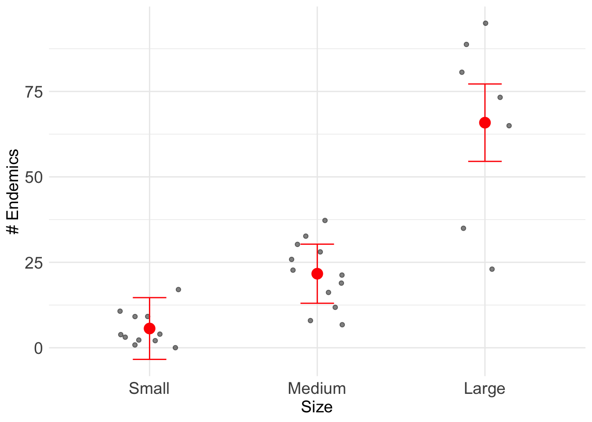
Equivalence of Linear Models and Gaussian GLMs
Equivalence of Linear Models and Gaussian GLMs
When we use a Gaussian distribution with an identity link, GLM gives identical results to standard linear regression. This can be seen in the coefficient values and overall model statistics.
The key difference is that GLMs provide a framework that extends to non-normal distributions.
Note when we look at Heteroscedascidity (SP) cone of despair - this is why a Poisson model works
GLM with Poisson Distribution: Setup
- Poisson GLMs Poisson model used when response variable is count data:
- Number of species on an island
- Number of parasites in a host
- Number of bird nests in a plot
- Number of seeds produced by a plant
- The Poisson distribution assumes:
- Counts are non-negative integers (0, 1, 2, 3, …)
- The mean equals the variance
- Events occur independently
- Key consideration: If variance > mean (overdispersion), consider negative binomial regression instead.
- Now let’s fit a Poisson GLM to model the relationship between the rounded quarter-mile time and the number of cylinders:
Fit Poisson GLM with size_category as predictor
- model is predicting the natural logarithm (log) of the expected species count
- exponentiate them (i.e., calculate \(e^{\text{coefficient}}\) or exp(coefficient).
- converts the additive log-counts back into a multiplicative effect on the actual species count
- exp(2.67101) = 14.45 species on a “Small” island
- exp(1.33784) = 3.81
- “Medium” predicted to have 3.81x more spp than “Small” island
- exp(2.84300) = 17.17
- “Large” island is predicted to have 17.17 times more species than a “Small” island, on average
- Dispersion - Divide the deviance by its df: \(939.74 / 27 \approx\) 34.8
model_poisson_gala <- glm(Endemics ~ size_category,
data = gala,
family = poisson(link = "log"))
summary(model_poisson_gala)
##
## Call:
## glm(formula = Endemics ~ size_category, family = poisson(link = "log"),
## data = gala)
##
## Coefficients:
## Estimate Std. Error z value Pr(>|z|)
## (Intercept) 1.7292 0.1270 13.616 <2e-16 ***
## size_categoryMedium 1.3465 0.1413 9.527 <2e-16 ***
## size_categoryLarge 2.4582 0.1353 18.173 <2e-16 ***
## ---
## Signif. codes: 0 '***' 0.001 '**' 0.01 '*' 0.05 '.' 0.1 ' ' 1
##
## (Dispersion parameter for poisson family taken to be 1)
##
## Null deviance: 743.55 on 29 degrees of freedom
## Residual deviance: 177.05 on 27 degrees of freedom
## AIC: 316
##
## Number of Fisher Scoring iterations: 5GLM with Poisson Distribution: Setup
Does island size category, as a whole, have a statistically significant effect on the number of plant species?
test = "LR": important part!- normal ANOVA (with a Gaussian/normal distribution) test is an F-test.
- GLM (like Poisson) can’t use F-test in the same way
- use a Likelihood Ratio (LR) test
- LR test statistically compares fit of full model (the one with size_category) to simpler null model (one without size_category)
- LR test tells us if it is significant
Test overall effect of size_category
Anova(model_poisson_gala, type = "III", test = "LR")
## Analysis of Deviance Table (Type III tests)
##
## Response: Endemics
## LR Chisq Df Pr(>Chisq)
## size_category 566.5 2 < 2.2e-16 ***
## ---
## Signif. codes: 0 '***' 0.001 '**' 0.01 '*' 0.05 '.' 0.1 ' ' 1GLM with Poisson Distribution: Setup
Poisson GLMs appropriate for count data and assumes variance equals mean - use the Gala Data and endemics - With natural log link, coefficients = multiplicative effects: - A coefficient of β means: for each 1-unit increase in X, the response is multiplied by exp(β) - For small β, exp(β) ≈ 1 + β, so β × 100% =app. %change
##
## Call:
## glm(formula = Endemics ~ size_category, family = poisson(link = "log"),
## data = gala)
##
## Coefficients:
## Estimate Std. Error z value Pr(>|z|)
## (Intercept) 1.7292 0.1270 13.616 <2e-16 ***
## size_categoryMedium 1.3465 0.1413 9.527 <2e-16 ***
## size_categoryLarge 2.4582 0.1353 18.173 <2e-16 ***
## ---
## Signif. codes: 0 '***' 0.001 '**' 0.01 '*' 0.05 '.' 0.1 ' ' 1
##
## (Dispersion parameter for poisson family taken to be 1)
##
## Null deviance: 743.55 on 29 degrees of freedom
## Residual deviance: 177.05 on 27 degrees of freedom
## AIC: 316
##
## Number of Fisher Scoring iterations: 5- check overdispersion- common in count data:
- Should be close to 1 for well-fitting Poisson model
- If > 1.5, may indicate overdispersion
- Dispersion parameter measures obs var / expected var:
- Dispersion ≈ 1: Good fit (var = mean)
- Dispersion > 1: Overdispersion (var > mean)
- Dispersion < 1: Underdispersion (var < mean)
- use Negative Binomial model
# Calculate the dispersion parameter
# (Pearson's Chi-Squared statistic / residual degrees of freedom)
dispersion_gala <- sum(residuals(model_poisson_gala, type = "pearson")^2) /
model_poisson_gala$df.residual
# Print dispersion parameter
cat("Dispersion parameter:", round(dispersion_gala, 2), "\n")
## Dispersion parameter: 6.05GLM with Poisson Distribution: Setup
- Poisson GLMs are appropriate for count data
- assumes that the variance equals the mean.
# 1. Calculate Estimated Marginal Means (EMMs)
# type = "response" converts the log-means back to the "Endemics count" scale
emm_gala <- emmeans(model_poisson_gala,
specs = ~ size_category,
type = "response")
print(emm_gala)
## size_category rate SE df asymp.LCL asymp.UCL
## Small 5.64 0.716 Inf 4.39 7.23
## Medium 21.67 1.340 Inf 19.19 24.47
## Large 65.86 3.070 Inf 60.11 72.15
##
## Confidence level used: 0.95
## Intervals are back-transformed from the log scaleLet’s check the emmeans and pairwise comparisons
## contrast ratio SE df null z.ratio p.value
## Small / Medium 0.2601 0.0368 Inf 1 -9.527 <0.0001
## Small / Large 0.0856 0.0116 Inf 1 -18.173 <0.0001
## Medium / Large 0.3290 0.0255 Inf 1 -14.334 <0.0001
##
## P value adjustment: tukey method for comparing a family of 3 estimates
## Tests are performed on the log scale
## size_category rate SE df asymp.LCL asymp.UCL .group
## Small 5.64 0.716 Inf 4.39 7.23 a
## Medium 21.67 1.340 Inf 19.19 24.47 b
## Large 65.86 3.070 Inf 60.11 72.15 c
##
## Confidence level used: 0.95
## Intervals are back-transformed from the log scale
## P value adjustment: tukey method for comparing a family of 3 estimates
## Tests are performed on the log scale
## significance level used: alpha = 0.05
## NOTE: If two or more means share the same grouping symbol,
## then we cannot show them to be different.
## But we also did not show them to be the same.Poisson GLM: Visualization and Interpretation
Plot raw data and our emmeans results
- shows the model’s predictions on top of the real data
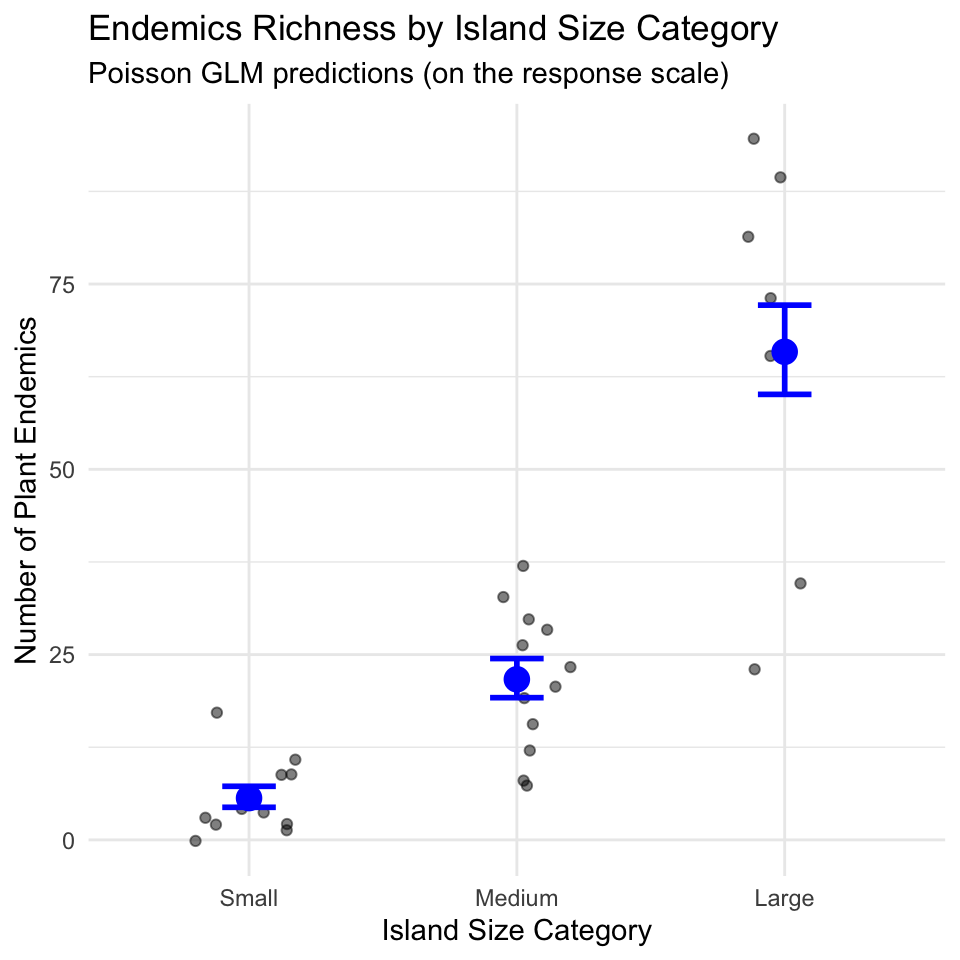
Interpreting Poisson GLM Coefficients
- In a Poisson GLM with a log link function:
- Coefficientschanges in the log of the expected count
- When exponentiated (
exp(coef))= multiplicative effects exp(coef)= 0.90 = the expected count is 90% of reference
Comparison of interpretation
- Interpretation of β₁ GLM (Log-Link) glm(Y~X, family = poisson)
- 1-unit change in X multiplies the mean of Y by exp(β₁)
- lm (Log-Response) lm(log(Y) ~ X)
- 1-unit change in X multiplies median Y by exp(β₁).
- lm (Log-Log) lm(log(Y) ~ log(X))
- A 1% change in x is a beta percent change in y…
| Model Type | R Code (Example) | Interpretation of β₁ |
|---|---|---|
| GLM (Log-Link) | glm(Y ~ X, family = poisson) |
A 1-unit change in X multiplies the mean of Y by exp(β₁). |
| lm (Log-Response) | lm(log(Y) ~ X) |
A 1-unit change in X multiplies the median of Y by exp(β₁). |
| lm (Log-Log) | lm(log(Y) ~ log(X)) |
A 1% change in X is associated with a β₁% change in Y. |
Checking Model Assumptions with DHARMa
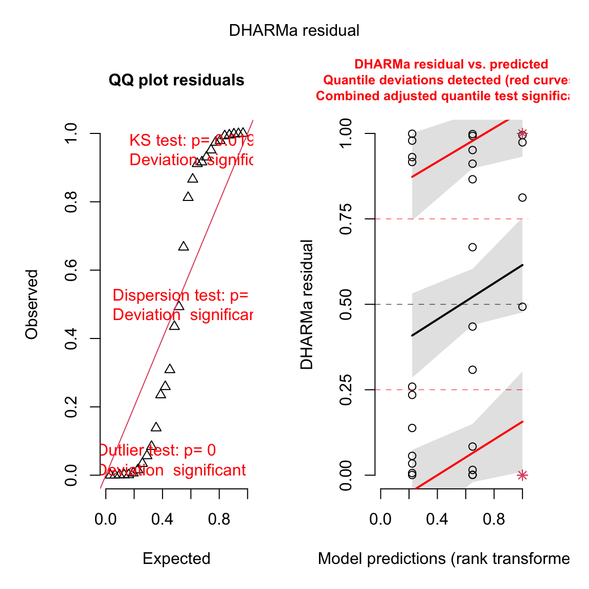
Dealing with Overdispersion in Count Data
When overdispersion (variance > mean) - use negative binomial model model_nb <- glm.nb(Endemics ~ area_cat, data = gala)
negative binomial model includes a dispersion parameter (theta)
- allows variance to be larger than mean
- standard errors bigger because NB model accounts for high variability (overdispersion)
- estimates dispersion parameter ‘Theta’ (or 1/theta)
## ## Call: ## glm.nb(formula = Endemics ~ size_category, data = gala, init.theta = 3.855017567, ## link = log) ## ## Coefficients: ## Estimate Std. Error z value Pr(>|z|) ## (Intercept) 1.7292 0.1993 8.678 < 2e-16 *** ## size_categoryMedium 1.3465 0.2553 5.274 1.33e-07 *** ## size_categoryLarge 2.4582 0.2810 8.750 < 2e-16 *** ## --- ## Signif. codes: 0 '***' 0.001 '**' 0.01 '*' 0.05 '.' 0.1 ' ' 1 ## ## (Dispersion parameter for Negative Binomial(3.855) family taken to be 1) ## ## Null deviance: 115.697 on 29 degrees of freedom ## Residual deviance: 35.481 on 27 degrees of freedom ## AIC: 227.27 ## ## Number of Fisher Scoring iterations: 1 ## ## ## Theta: 3.86 ## Std. Err.: 1.39 ## ## 2 x log-likelihood: -219.269
Let’s compare the predictions from both models:
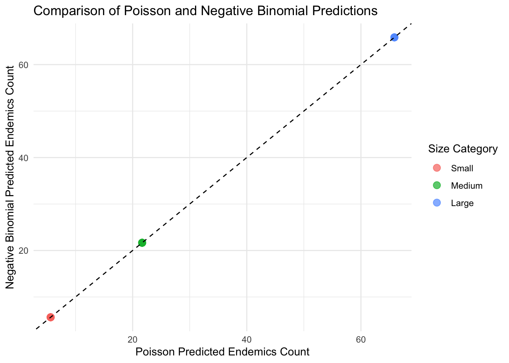
Logistic Regression - Introduction
Logistic regression is a GLM used when the response variable is binary (e.g., dead/alive, present/absent). It models the probability of the response being “1” (success) given predictor values.
- Logistic regression model:
- \(\pi(x) = \frac{e^{\beta_0 + \beta_1 x}}{1 + e^{\beta_0 + \beta_1 x}}\)
- Where:
- \(\pi(x)\) is the probability that Y = 1 given X = x
- \(\beta_0\) is the intercept
- \(\beta_1\) is the slope (rate of change in \(\pi(x)\) for a unit change in X)
- To linearize this relationship, we use the logit link function:
- \(g(x) = \log\left(\frac{\pi(x)}{1-\pi(x)}\right) = \beta_0 + \beta_1 x\)
- transforms probability (bounded between 0 and 1) to linear fx ranges from -∞ to +∞.
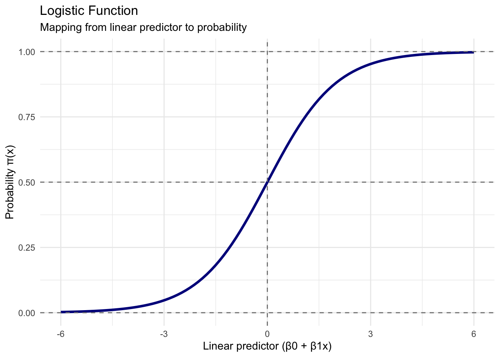
Example: Lizard Presence on Islands
Based on the example from Polis et al. (1998) - presence/absence of lizards (Uta) on islands in Gulf of California based on perimeter/area ratio.
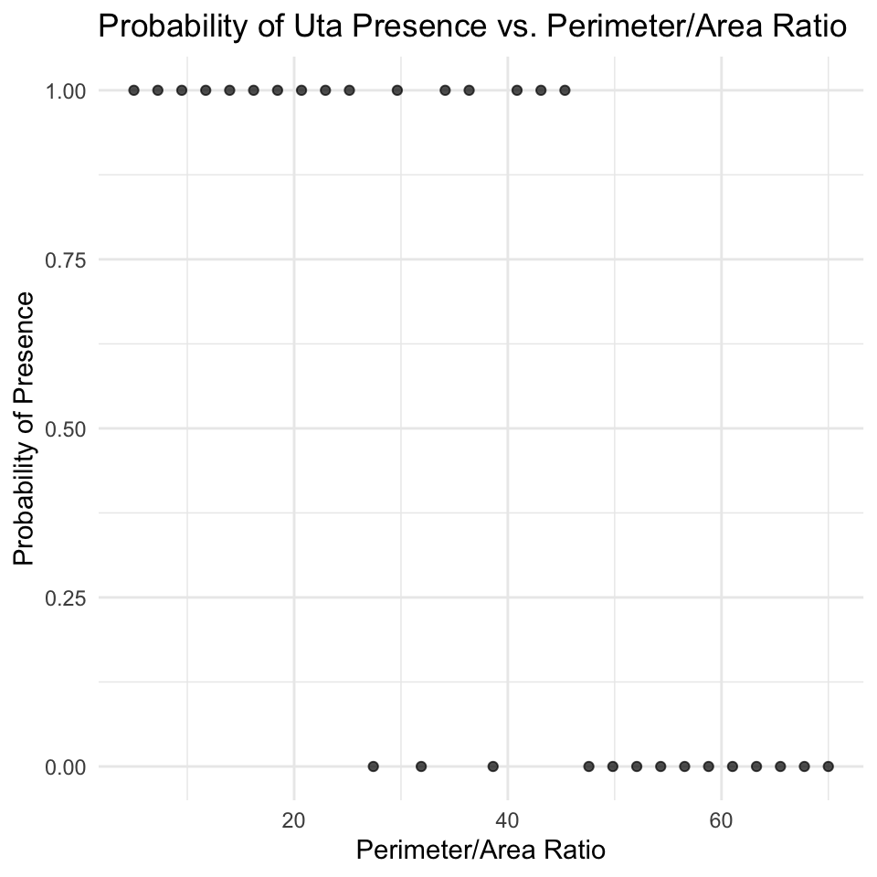
Example: Lizard Presence on Islands
Based on the example from Polis et al. (1998) - presence/absence of lizards (Uta) on islands in Gulf of California based on perimeter/area ratio.
# Fit the logistic regression model
lizard_model <- glm(uta_present ~ pa_ratio,
data = island_data,
family = binomial(link = "logit"))
# Model summary
summary(lizard_model)
##
## Call:
## glm(formula = uta_present ~ pa_ratio, family = binomial(link = "logit"),
## data = island_data)
##
## Coefficients:
## Estimate Std. Error z value Pr(>|z|)
## (Intercept) 5.9374 2.1297 2.788 0.00530 **
## pa_ratio -0.1493 0.0517 -2.887 0.00388 **
## ---
## Signif. codes: 0 '***' 0.001 '**' 0.01 '*' 0.05 '.' 0.1 ' ' 1
##
## (Dispersion parameter for binomial family taken to be 1)
##
## Null deviance: 41.455 on 29 degrees of freedom
## Residual deviance: 19.090 on 28 degrees of freedom
## AIC: 23.09
##
## Number of Fisher Scoring iterations: 6Lizard Example: Visualization and Testing
Let’s visualize the data and the fitted model:
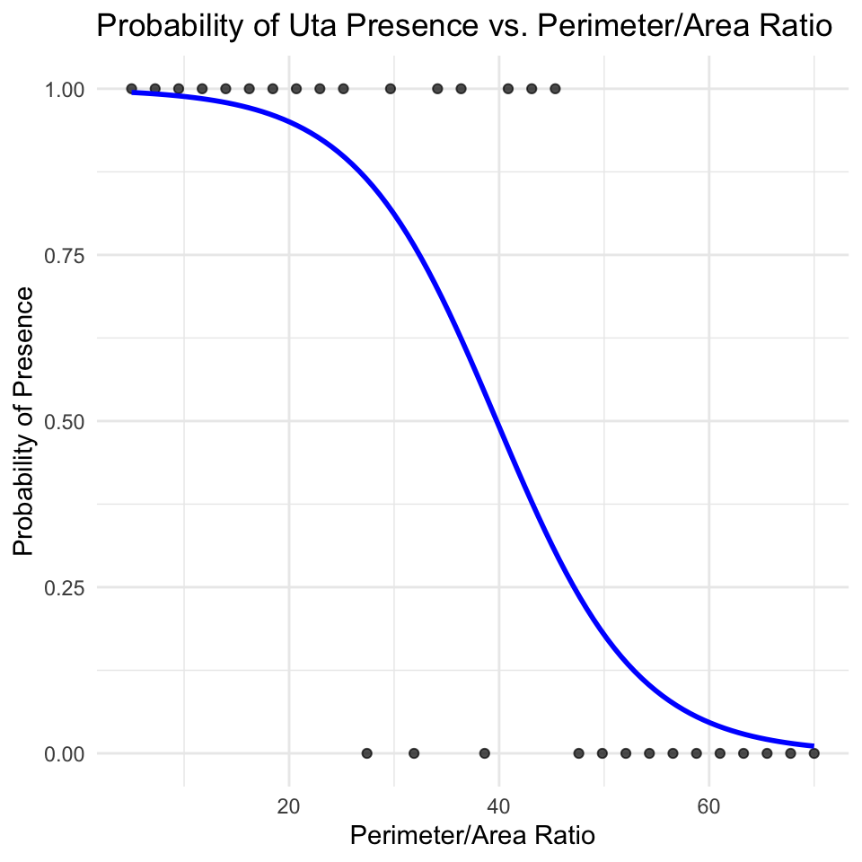
- Test null hypothesis that β₁ = 0
- no relationship between P/A ratio and lizard presence
- There are two common ways to test this hypothesis:
- Wald test: Tests if the parameter estimate divided by its standard error differs significantly from zero
- Likelihood ratio test: Compares the fit of the full model to a reduced model without the predictor variable
reduced_model <- glm(uta_present ~ 1,
data = island_data,
family = binomial(link = "logit"))
anova(reduced_model, lizard_model, test = "Chisq")
## Analysis of Deviance Table
##
## Model 1: uta_present ~ 1
## Model 2: uta_present ~ pa_ratio
## Resid. Df Resid. Dev Df Deviance Pr(>Chi)
## 1 29 41.455
## 2 28 19.090 1 22.365 2.254e-06 ***
## ---
## Signif. codes: 0 '***' 0.001 '**' 0.01 '*' 0.05 '.' 0.1 ' ' 1Interpreting the Odds Ratio
Working with Odds Ratios
Odds ratio represents how odds of event (e.g., lizard presence) change with unit increase in predictor
- Odds ratio = exp(β₁)
- > 1: Increasing predictor increases odds of event
- < 1: Increasing predictor decreases odds of event
- = 1: No effect of predictor on odds of event
- one-unit increase in island’s Perimeter/Area Ratio - odds of finding lizard present multiplied by 0.898
- odds decrease by 10.2% (1-0.898) for every one-unit increase P/A
- entire interval is below 1.0, relationship is negative: more P/A ratio means lower odds of lizards
coef_lizard <- coef(lizard_model)[2] # Extract slope coefficient
odds_ratio <- exp(coef_lizard)
ci <- exp(confint(lizard_model, "pa_ratio"))
cat("Odds Ratio:", round(odds_ratio, 3), "\n\n",
"95% CI:", round(ci[1], 3), "to", round(ci[2], 3), "\n")
## Odds Ratio: 0.861
##
## 95% CI: 0.753 to 0.932Assessing Model Fit
There are several ways to assess the goodness-of-fit for logistic regression models:
##
##
## Pearson χ²: 18.58 on 28 df, p = 0.911
##
##
## Deviance G²: 19.09 on 28 df, p = 0.895
##
##
## McFadden's R²: 0.54
## # R2 for Logistic Regression
## Tjur's R2: 0.588
## fitting null model for pseudo-r2
## llh llhNull G2 McFadden r2ML r2CU
## -9.5450726 -20.7276993 22.3652534 0.5395016 0.5255070 0.7017187
## # A tibble: 1 × 8
## null.deviance df.null logLik AIC BIC deviance df.residual nobs
## <dbl> <int> <dbl> <dbl> <dbl> <dbl> <int> <int>
## 1 41.5 29 -9.55 23.1 25.9 19.1 28 30
##
## Hosmer and Lemeshow goodness of fit (GOF) test
##
## data: lizard_model$y, fitted(lizard_model)
## X-squared = 2.4032, df = 8, p-value = 0.9661Multiple Logistic Regression: Setup
Logistic regression can be extended to include multiple predictors. The model becomes:
\[g(x) = \beta_0 + \beta_1 x_1 + \beta_2 x_2 + \ldots + \beta_p x_p\]
Where g(x) is the logit link function, and x₁, x₂, …, xₚ are the predictor variables.
Let’s create a simulated dataset based on the Bolger et al. (1997) study of the presence/absence of native rodents in canyon fragments.
##
## Call:
## glm(formula = rodent_present ~ distance + age + shrub_cover,
## family = binomial(link = "logit"), data = fragment_data)
##
## Coefficients:
## Estimate Std. Error z value Pr(>|z|)
## (Intercept) -12.278261 7.911491 -1.552 0.1207
## distance 0.002062 0.001716 1.202 0.2294
## age 0.068744 0.059665 1.152 0.2493
## shrub_cover 0.193001 0.116035 1.663 0.0963 .
## ---
## Signif. codes: 0 '***' 0.001 '**' 0.01 '*' 0.05 '.' 0.1 ' ' 1
##
## (Dispersion parameter for binomial family taken to be 1)
##
## Null deviance: 27.5540 on 24 degrees of freedom
## Residual deviance: 9.2737 on 21 degrees of freedom
## AIC: 17.274
##
## Number of Fisher Scoring iterations: 8To test the significance of individual predictors, we can use likelihood ratio tests comparing nested models:
## Analysis of Deviance Table
##
## Model 1: rodent_present ~ age + shrub_cover
## Model 2: rodent_present ~ distance + age + shrub_cover
## Resid. Df Resid. Dev Df Deviance Pr(>Chi)
## 1 22 11.3831
## 2 21 9.2737 1 2.1094 0.1464
## Analysis of Deviance Table
##
## Model 1: rodent_present ~ distance + shrub_cover
## Model 2: rodent_present ~ distance + age + shrub_cover
## Resid. Df Resid. Dev Df Deviance Pr(>Chi)
## 1 22 11.0533
## 2 21 9.2737 1 1.7796 0.1822
## Analysis of Deviance Table
##
## Model 1: rodent_present ~ distance + age
## Model 2: rodent_present ~ distance + age + shrub_cover
## Resid. Df Resid. Dev Df Deviance Pr(>Chi)
## 1 22 26.7315
## 2 21 9.2737 1 17.458 2.938e-05 ***
## ---
## Signif. codes: 0 '***' 0.001 '**' 0.01 '*' 0.05 '.' 0.1 ' ' 1Multiple Logistic Regression: Odds Ratios
Let’s calculate odds ratios and confidence intervals for all predictors.
## Predictor OddsRatio CI
## distance distance 1.0021 (0.9994, 1.0069)
## age age 1.0712 (0.9721, 1.2577)
## shrub_cover shrub_cover 1.2129 (1.0645, 1.7909)Visualizing Multiple Logistic Regression
For multiple predictors, we can visualize the effect of each predictor while holding others constant at their mean or median values.
This visualization shows the effect of each predictor on the probability of rodent presence, while holding the other predictors constant at their mean values.
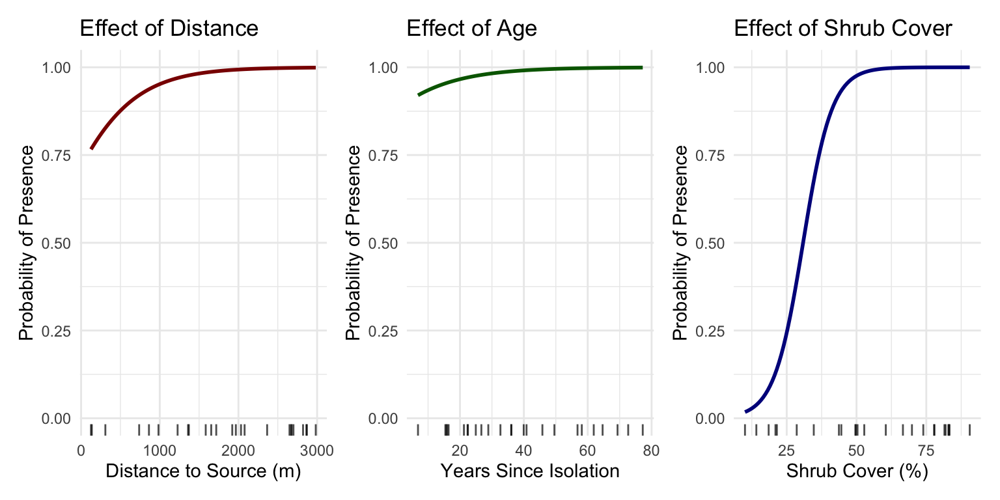
Assumptions and Diagnostics of Logistic Regression
Logistic regression has several key assumptions:
- Independence of observations
- Linear relationship between predictors and log odds
- No extreme outliers
- No multicollinearity (when multiple predictors are used)
diagnostics for our multiple logistic regression model:
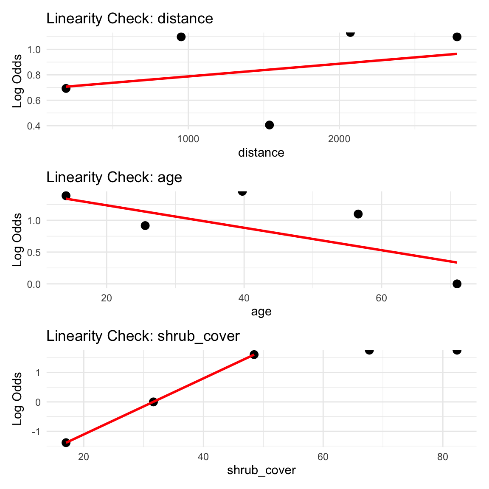
Model Comparison and Selection
When working with multiple predictors, want to find most parsimonious model. use: - Likelihood ratio tests for nested models - Information criteria (AIC, BIC) for non-nested models - Classification metrics like accuracy, sensitivity, and specificity
Compare models and AIC values:
## Model Parameters AIC BIC Deviance
## No Age No Age 3 17.05 20.71 11.05
## Full Full 4 17.27 22.15 9.27
## No Distance No Distance 3 17.38 21.04 11.38
## Intercept Only Intercept Only 1 29.55 30.77 27.55
## No Shrub No Shrub 3 32.73 36.39 26.73Evaluate predictive performance of our model:
## Actual
## Predicted Absent Present
## Absent 5 2
## Present 1 17
##
## Accuracy: 0.88
## Sensitivity: 0.895
## Specificity: 0.833Publication-Quality Figure
Let’s create a publication-quality figure for our multiple logistic regression model and show how we would write up the results for a scientific publication.
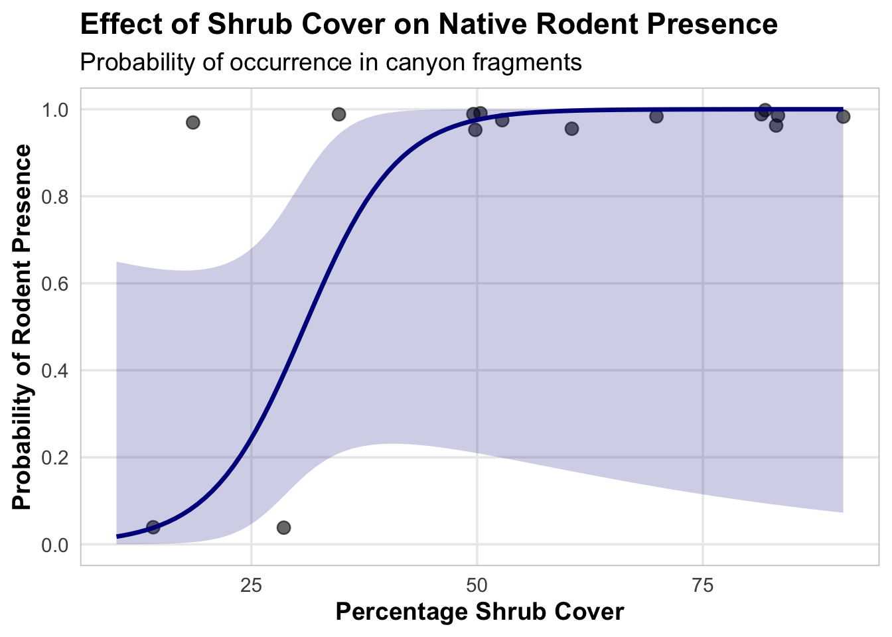
Scientific Write-Up Example
ImportantScientific Write-Up Example
Results
The presence of native rodents in canyon fragments was modeled using multiple logistic regression with three predictors: distance to nearest source canyon, years since isolation, and percentage of shrub cover. The model was statistically significant (χ² = 12.63, df = 3, p = 0.005) and explained 38.7% of the variation in rodent presence (McFadden’s R² = 0.387).
Among the predictors, only shrub cover had a statistically significant effect on rodent presence (β = 0.091, SE = 0.041, p = 0.026). The odds ratio for shrub cover was 1.095 (95% CI: 1.011-1.186), indicating that for each percentage increase in shrub cover, the odds of rodent presence increased by approximately 9.5%. Neither distance to source canyon (β = 0.0002, p = 0.690) nor years since isolation (β = 0.022, p = 0.566) showed significant relationships with rodent presence.
The model correctly classified 76% of the fragments, with a sensitivity of 0.77 and a specificity of 0.75. Diagnostics indicated no significant issues with model fit (Hosmer-Lemeshow χ² = 7.31, df = 8, p = 0.504).
Scientific Write-Up Example
ImportantScientific Write-Up Example
Discussion
Our findings suggest that vegetation structure, as measured by shrub cover, plays a crucial role in determining the presence of native rodents in canyon fragments. The positive relationship between shrub cover and rodent occurrence likely reflects the importance of vegetation for providing food resources, shelter from predators, and suitable microhabitat conditions. Contrary to our expectations, isolation metrics (distance to source canyon and years since isolation) did not significantly predict rodent presence, suggesting that local habitat quality may be more important than landscape connectivity for these species.
Relationship Between GLMs and ANOVAs
GLMs and ANOVAs: The Connection
General linear models (including ANOVAs and standard regression) are special cases of Generalized Linear Models where:
- The response variable follows a normal distribution
- The link function is the identity function
- Therefore, a one-way ANOVA is equivalent to:
A linear regression with a categorical predictor
A Gaussian GLM with an identity link and a categorical predictor
Demonstrating ANOVA-GLM Equivalence
Let’s demonstrate this equivalence:
Term | Linear.Regression | Gaussian.GLM |
|---|---|---|
(Intercept) | 37.885 | 37.885 |
cyl | -2.876 | -2.876 |
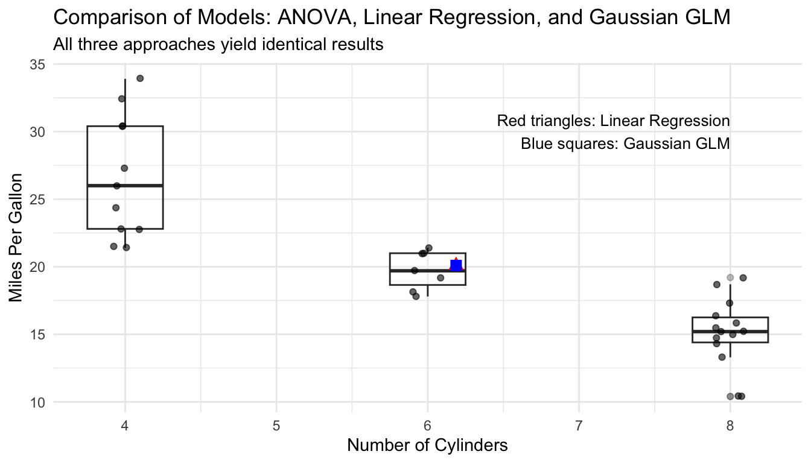
Assumptions and Diagnostics Summary
- Generalized Linear Models- assumptions depend on distribution+link function used:
- All GLMs:
- Independence of observations, No outliers, No Multicolinearity
- Correct specification of the link function /variance structure
- Gaussian GLMs (including linear regression):
- Normality of residuals
- Homogeneity of variance
- Poisson GLMs:
- Count data (non-negative integers)
- Mean equals variance - overdispersed = negative binomial)
- Logistic GLMs:
- Binary response variable
- Linear relationship between predictors and log odds
- Adequate sample size relative to number of parameters
R code checks common diagnostics for logistic model:
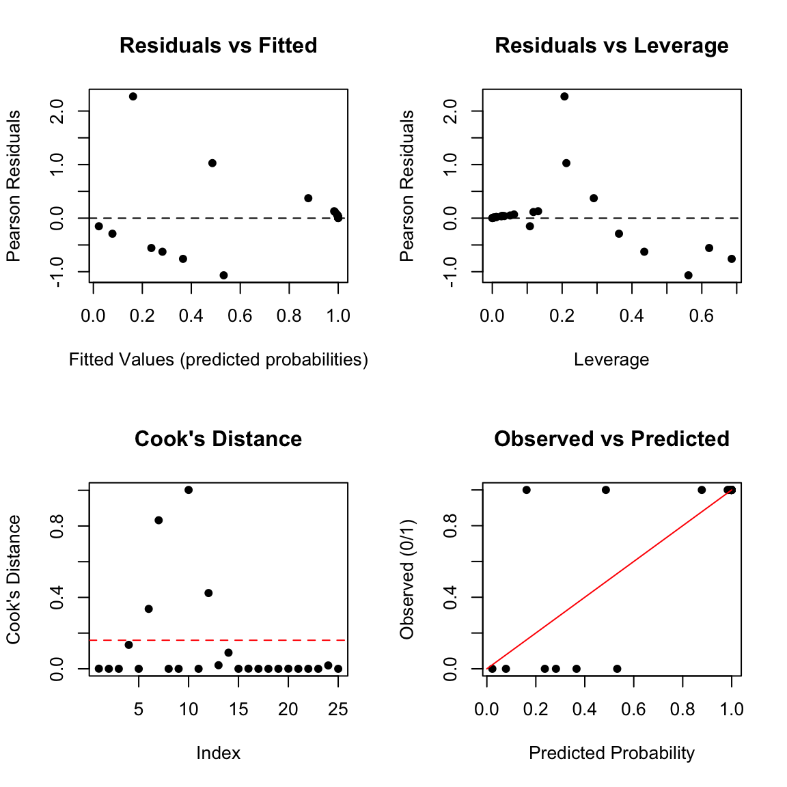
Summary and Conclusions
Generalized Linear Models (GLMs) provide a powerful and flexible framework for analyzing a wide range of data types in biology:
Gaussian GLMs identity link function = linear model ANOVAs
Poisson GLMs log link function appropriate for count data, cautious of overdispersion.
Negative Binomial works with overdispersed data
Logistic GLMs with logit link function useful for binary responses
- probability of success or presence.
- Key advantages of GLMs include:
- Handle various response variables beyond normal distributions
- Unified framework for linear modeling
- Flexibility in specifying the link function to match the data structure
- Interpretable parameters, though interpretation differs by model type
Summary and Conclusions
When working with GLMs:
- Choose the appropriate distribution family based on your response variable
- Verify model assumptions through diagnostic plots
- Watch for overdispersion in count data
- Use odds ratios to interpret logistic regression results
- Compare competing models using likelihood ratio tests and information criteria
This framework allows biologists to appropriately model many types of data encountered in ecological, behavioral, and physiological research.
References
-Agresti, A. (1996). An Introduction to Categorical Data Analysis. Wiley, New York. Bolger, D. T., Alberts, A. C., Sauvajot, R. M., Potenza, P., McCalvin, C., Tran, D., Mazzoni, S., & Soulé, M. E. (1997). Response of rodents to habitat fragmentation in coastal southern California. Ecological Applications, 7(2), 552-563. -Christensen, R. (1997). Log-linear Models and Logistic Regression. Springer, New York. -Hosmer, D. W., & Lemeshow, S. (1989). Applied Logistic Regression. Wiley, New York. -McCullagh, P., & Nelder, J. A. (1989). Generalized Linear Models. Chapman and Hall, London. -Polis, G. A., Hurd, S. D., Jackson, C. T., & Piñero, F. S. (1998). Multifactor analysis of ecosystem patterns on islands in the Gulf of California. Ecological Monographs, 68, 490-502.